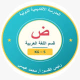

🏅 شهادة المحققين الأوائل↩︎ الحقيبة
اضغطي على أي خط منقّط واكتبي (اسم الفريق، الأسماء، النقاط، التاريخ)، واضغطي على المربعات لوضع ✓، ثم اطبعي. أو اطبعيها فارغة واكتبي باليد.

CASE CLOSED · TOP DETECTIVES
شهادة المحققين الأوائل
قضية «الخبر المختفي» 🔍
يُمنح فريق
هذه الشهادة تقديرًا لتميّزه في تحديد أنواع الخبر وتعليلها بالدليل، وفكّ الشيفرة السرية، والعمل بروح الفريق حتى أُغلقت القضية.
يُمنح المحقق/ة
عضو فريق بدور
هذه الشهادة تقديرًا لإسهامه في كشف الخبر المختبئ في الجمل، وتمييز أنواعه بالدليل: المفرد · الجملة الفعلية · الجملة الاسمية · شبه الجملة (جار ومجرور / ظرف)